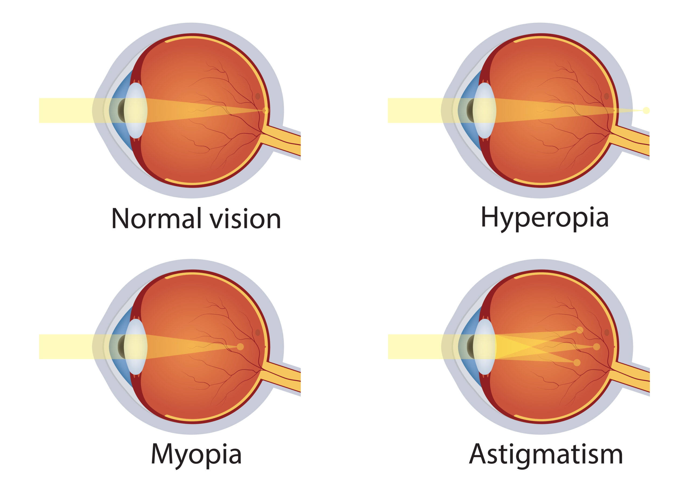

Guide to Contact Lens Options
Welcome to the site! Here you'll find an easy and quick guide to different contact lens types and why they are used (and why they might not be suitable for you!).
Maybe your local optometrist has recommended some contact lenses for you, or you've heard about them from a friend and just want to learn more. Regardless, you've come to the right place to learn all about contact lenses, particularly the ones that are a bit more uncommon.
Tips and tricks
Before you click into the individual pages, here are some general best practice tips and tricks to read first to ensure you keep your eyes healthy and to get the most out of your contact lenses:
- Do not use water to clean or store your contact lenses!
- Water is not sterile and contains micro-organisms. This increases your risk of getting an eye infection.
- Always use specific contact lens solution. You can find out more about these here.
- Do not swim, shower or sleep in your contact lenses unless your optometrist has directed you to
- These all increase your risk of infection and inflammation.
- General common sense: wash and dry your hands before handling your lenses, do not use lenses that are damaged or expired, and make sure to check you are using the correct lens for each eye!
- The last one happens more than you might think!
- For a guide on inserting and removing different contact lenses, check out these videos by the College of Optometry from the State University of New York.
Mistakes of course happen, and you might for example accidentally forget to take them out one night. Do not panic! If your eyes feel and look okay, and your vision is still normal then it is unlikely that there are any issues, so just try your best to avoid it in the future. If at any point you do feel like your eyes are uncomfortable, red or you get other symptoms like very watery or sore eyes, or your vision has changed, then remove your contact lens if you are able to and get in touch with an optometrist ASAP.
Handy definitions
- Here is also a quick guide to some of the terms you'll find throughout the site, that you may or may not be super familiar with already:
- Cornea: the clear layer at the front of the eye that protects the eye and allows light in.
- Retina: the tissue inside the eye that senses the light coming into the eye and sends it as signals to the brain.
- Myopia: short-sightedness; where the eyeball is too long so light focuses in front of the retina.
- Hyperopia: long-sightedness; where the eyeball is too short so light focuses in behind the retina.
- Astigmatism: when the parts of the eye, usually the cornea, are slightly oval in shape instead of perfectly spherical, resulting in light that focuses at different points in front of and behind the eye. Astigmatism can occur alongside myopia or hyperopia.
Now that that's over, head on over to the top right corner and explore the different types of contact lenses in more detail!